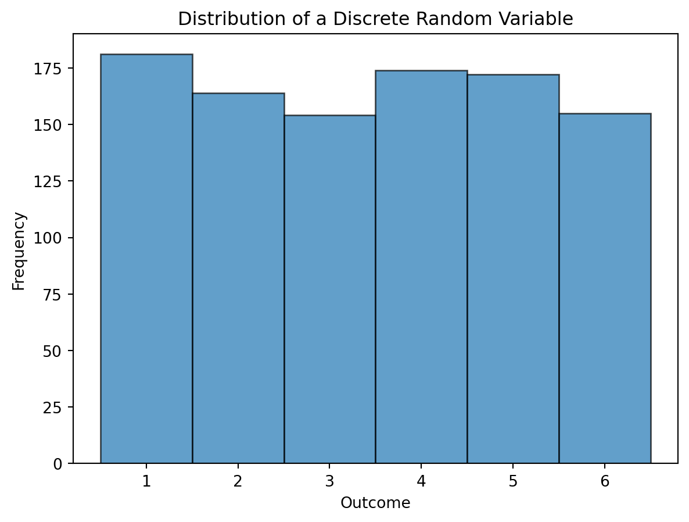
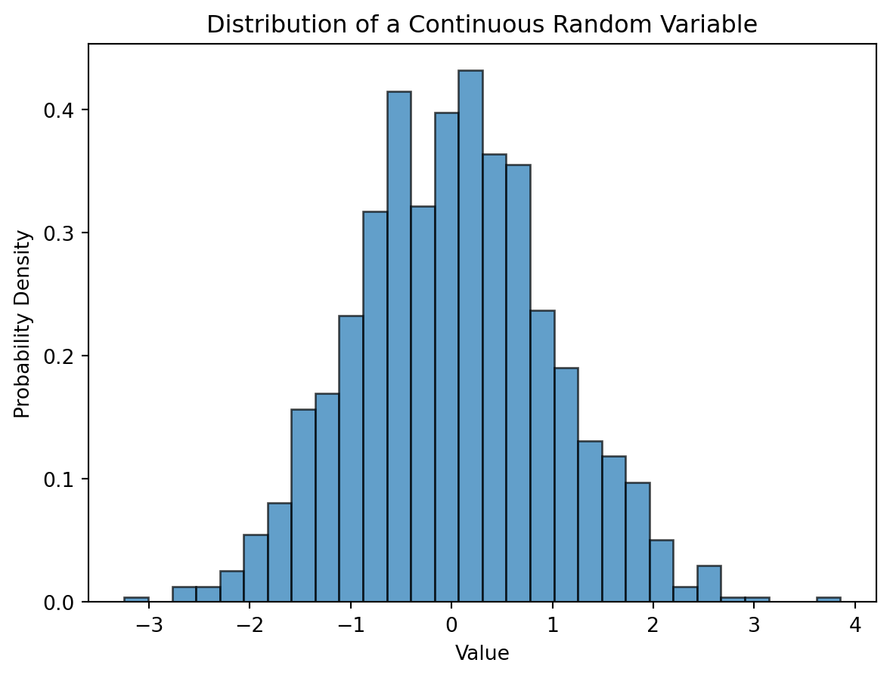
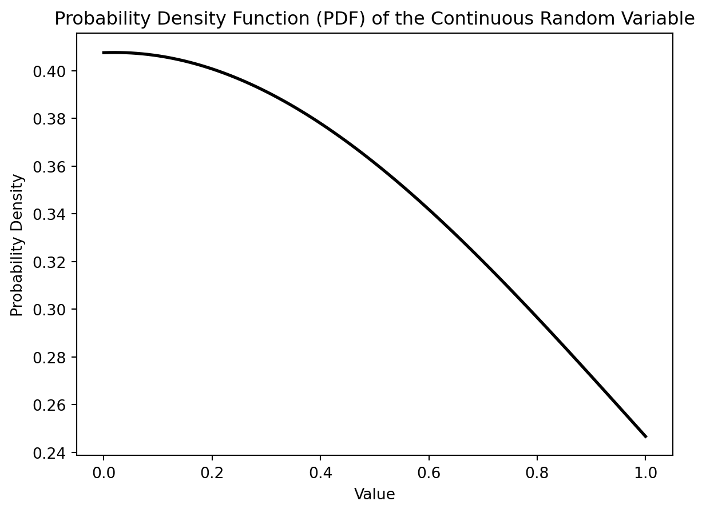

Probability Theory and Random Variables in Machine Learning
news
code
analysis
Author
Anant Sharma
Published
November 28, 2023
Introduction:
In the ever-evolving landscape of machine learning, Probability Theory and Random Variables serve as the fundamental building blocks that underpin the algorithms and models driving artificial intelligence. In this blog, we will delve into the intricate world of Probability Theory and Random Variables, exploring their significance and applications in the realm of machine learning.
Understanding Probability Theory:
Probability theory is the mathematical framework that enables us to quantify uncertainty. In the context of machine learning, uncertainty is omnipresent, and Probability Theory provides the tools to model, quantify, and reason about this uncertainty. At its core, probability theory deals with the likelihood of events occurring within a given set of possibilities.
Key Concepts:
Probability Distributions:
Probability distributions describe the likelihood of different outcomes in an experiment. Common distributions include the normal distribution, binomial distribution, and Poisson distribution.
Conditional Probability:
Conditional probability deals with the likelihood of an event occurring given that another event has already occurred. It is a crucial concept in machine learning, especially in tasks like Bayesian inference.
Bayesian Inference:
Bayesian inference, rooted in probability theory, allows for the incorporation of prior knowledge with observed data to update beliefs and make predictions. This is particularly valuable in situations with limited data.
Random Variables:
A random variable is a mathematical function that assigns a real number to each outcome of a random experiment. In simpler terms, it represents a quantity whose value is subject to randomness.
Types of Random Variables:
Discrete Random Variables:
Discrete random variables, in particular, play a crucial role in probabilistic models. These take on a countable number of distinct values. Examples include the outcome of rolling a die or the number of emails received in a day.
First lets import the libraries, generate synthetic data for a discrete random variable and visualize the graph.
# Import necessary librariesimport numpy as npimport matplotlib.pyplot as pltfrom scipy.stats import randintfrom collections import Counter# Generate synthetic data for a discrete random variabledata = randint.rvs(1, 7, size=1000, random_state=42)# Visualize the distribution of the discrete random variableplt.hist(data, bins=np.arange(0.5, 7.5, 1), align='mid', edgecolor='black', alpha=0.7)plt.title('Distribution of a Discrete Random Variable')plt.xlabel('Outcome')plt.ylabel('Frequency')plt.show()

Now lets calculate the Probability Mass Function of the Discrete Random Variable
# Calculate and display the PMFpmf = Counter(data)total_outcomes =len(data)pmf = {outcome: count / total_outcomes for outcome, count in pmf.items()}outcomes, probabilities =zip(*sorted(pmf.items()))print("Discrete Random Variable PMF:")for outcome, probability inzip(outcomes, probabilities):print(f"Outcome: {outcome}, Probability: {probability:.3f}")
Understanding discrete random variables is foundational for building probabilistic models in machine learning. The ability to generate, visualize, and analyze the distribution of discrete random variables is essential for making informed decisions in various applications. Incorporating these concepts into your machine learning workflow will enhance your understanding of uncertainty and probability, key elements in data-driven decision-making.
Continuous Random Variables:
Continuous random variables are essential in machine learning, often used to model phenomena with an infinite number of possible outcomes. These can take any value within a given range. Examples include the height of a person or the temperature on a given day.
First lets import the libraries, generate synthetic data for a continuous random variable and visualize the graph.
# Import necessary librariesimport numpy as npimport matplotlib.pyplot as pltfrom scipy.stats import norm# Generate synthetic data for a continuous random variabledata = norm.rvs(loc=0, scale=1, size=1000, random_state=42)# Visualize the distribution of the continuous random variableplt.hist(data, bins=30, density=True, edgecolor='black', alpha=0.7)plt.title('Distribution of a Continuous Random Variable')plt.xlabel('Value')plt.ylabel('Probability Density')plt.show()

Now lets calculate and display the Probability Density Function:
# Calculate and display the PDFxmin, xmax = plt.xlim()x = np.linspace(xmin, xmax, 100)pdf = norm.pdf(x, loc=np.mean(data), scale=np.std(data))plt.plot(x, pdf, 'k', linewidth=2)plt.title('Probability Density Function (PDF) of the Continuous Random Variable')plt.xlabel('Value')plt.ylabel('Probability Density')plt.show()

Continuous random variables are essential for modeling real-world phenomena in machine learning. Understanding their probability density functions and characteristics allows practitioners to make informed decisions when working with continuous data. Incorporating these concepts into your machine learning toolkit enhances your ability to analyze and model complex, continuous distributions.
Machine Learning Applications:
1. Classification and Prediction:
Probability theory is at the heart of classification algorithms, allowing models to assign probabilities to different classes. This is crucial in decision-making processes.
2. Regression Analysis:
Random variables play a central role in regression analysis, where the goal is to predict a continuous outcome. Probability distributions help model the inherent uncertainty in predictions.
3. Bayesian Machine Learning:
Bayesian methods leverage probability theory to update beliefs as more data becomes available. This is especially powerful in situations with limited data or when incorporating expert knowledge into the model.
4. Uncertainty Quantification:
Probability theory helps quantify uncertainties in machine learning models, providing a measure of confidence in predictions. This is vital in real-world applications where decision-makers need to be aware of the model’s reliability.
Conclusion:
In conclusion, Probability Theory and Random Variables form the bedrock of machine learning, enabling the modeling of uncertainty and enhancing the decision-making capabilities of algorithms. As the field continues to advance, a solid understanding of these concepts becomes increasingly critical for practitioners and researchers alike. By embracing the principles of Probability Theory and Random Variables, we unlock the potential to build more robust, reliable, and insightful machine learning models.```
Source Code
---title: "A Beginner's Guide to Probability Theory and Random Variables in Machine Learning"title-block-banner-color: whiteauthor: "Anant Sharma"date: "2023-11-28"categories: [news, code, analysis]image: "pt.jpeg"jupyter: python3---### Introduction:In the ever-evolving landscape of machine learning, Probability Theory and Random Variables serve as the fundamental building blocks that underpin the algorithms and models driving artificial intelligence. In this blog, we will delve into the intricate world of Probability Theory and Random Variables, exploring their significance and applications in the realm of machine learning.### Understanding Probability Theory:Probability theory is the mathematical framework that enables us to quantify uncertainty. In the context of machine learning, uncertainty is omnipresent, and Probability Theory provides the tools to model, quantify, and reason about this uncertainty. At its core, probability theory deals with the likelihood of events occurring within a given set of possibilities.#### Key Concepts:1. **Probability Distributions:** - Probability distributions describe the likelihood of different outcomes in an experiment. Common distributions include the normal distribution, binomial distribution, and Poisson distribution.2. **Conditional Probability:** - Conditional probability deals with the likelihood of an event occurring given that another event has already occurred. It is a crucial concept in machine learning, especially in tasks like Bayesian inference.3. **Bayesian Inference:** - Bayesian inference, rooted in probability theory, allows for the incorporation of prior knowledge with observed data to update beliefs and make predictions. This is particularly valuable in situations with limited data.### Random Variables:A random variable is a mathematical function that assigns a real number to each outcome of a random experiment. In simpler terms, it represents a quantity whose value is subject to randomness.#### Types of Random Variables:1. **Discrete Random Variables:** - Discrete random variables, in particular, play a crucial role in probabilistic models. These take on a countable number of distinct values. Examples include the outcome of rolling a die or the number of emails received in a day. First lets import the libraries, generate synthetic data for a discrete random variable and visualize the graph.```{python}# Import necessary librariesimport numpy as npimport matplotlib.pyplot as pltfrom scipy.stats import randintfrom collections import Counter# Generate synthetic data for a discrete random variabledata = randint.rvs(1, 7, size=1000, random_state=42)# Visualize the distribution of the discrete random variableplt.hist(data, bins=np.arange(0.5, 7.5, 1), align='mid', edgecolor='black', alpha=0.7)plt.title('Distribution of a Discrete Random Variable')plt.xlabel('Outcome')plt.ylabel('Frequency')plt.show()```Now lets calculate the Probability Mass Function of the Discrete Random Variable```{python}# Calculate and display the PMFpmf = Counter(data)total_outcomes =len(data)pmf = {outcome: count / total_outcomes for outcome, count in pmf.items()}outcomes, probabilities =zip(*sorted(pmf.items()))print("Discrete Random Variable PMF:")for outcome, probability inzip(outcomes, probabilities):print(f"Outcome: {outcome}, Probability: {probability:.3f}")``` Understanding discrete random variables is foundational for building probabilistic models in machine learning. The ability to generate, visualize, and analyze the distribution of discrete random variables is essential for making informed decisions in various applications. Incorporating these concepts into your machine learning workflow will enhance your understanding of uncertainty and probability, key elements in data-driven decision-making.2. **Continuous Random Variables:** - Continuous random variables are essential in machine learning, often used to model phenomena with an infinite number of possible outcomes. These can take any value within a given range. Examples include the height of a person or the temperature on a given day. First lets import the libraries, generate synthetic data for a continuous random variable and visualize the graph.```{python}# Import necessary librariesimport numpy as npimport matplotlib.pyplot as pltfrom scipy.stats import norm# Generate synthetic data for a continuous random variabledata = norm.rvs(loc=0, scale=1, size=1000, random_state=42)# Visualize the distribution of the continuous random variableplt.hist(data, bins=30, density=True, edgecolor='black', alpha=0.7)plt.title('Distribution of a Continuous Random Variable')plt.xlabel('Value')plt.ylabel('Probability Density')plt.show()```Now lets calculate and display the Probability Density Function:```{python}# Calculate and display the PDFxmin, xmax = plt.xlim()x = np.linspace(xmin, xmax, 100)pdf = norm.pdf(x, loc=np.mean(data), scale=np.std(data))plt.plot(x, pdf, 'k', linewidth=2)plt.title('Probability Density Function (PDF) of the Continuous Random Variable')plt.xlabel('Value')plt.ylabel('Probability Density')plt.show()```Continuous random variables are essential for modeling real-world phenomena in machine learning. Understanding their probability density functions and characteristics allows practitioners to make informed decisions when working with continuous data. Incorporating these concepts into your machine learning toolkit enhances your ability to analyze and model complex, continuous distributions.### Machine Learning Applications:#### 1. **Classification and Prediction:** - Probability theory is at the heart of classification algorithms, allowing models to assign probabilities to different classes. This is crucial in decision-making processes.#### 2. **Regression Analysis:** - Random variables play a central role in regression analysis, where the goal is to predict a continuous outcome. Probability distributions help model the inherent uncertainty in predictions.#### 3. **Bayesian Machine Learning:** - Bayesian methods leverage probability theory to update beliefs as more data becomes available. This is especially powerful in situations with limited data or when incorporating expert knowledge into the model.#### 4. **Uncertainty Quantification:** - Probability theory helps quantify uncertainties in machine learning models, providing a measure of confidence in predictions. This is vital in real-world applications where decision-makers need to be aware of the model's reliability.### Conclusion:In conclusion, Probability Theory and Random Variables form the bedrock of machine learning, enabling the modeling of uncertainty and enhancing the decision-making capabilities of algorithms. As the field continues to advance, a solid understanding of these concepts becomes increasingly critical for practitioners and researchers alike. By embracing the principles of Probability Theory and Random Variables, we unlock the potential to build more robust, reliable, and insightful machine learning models.```